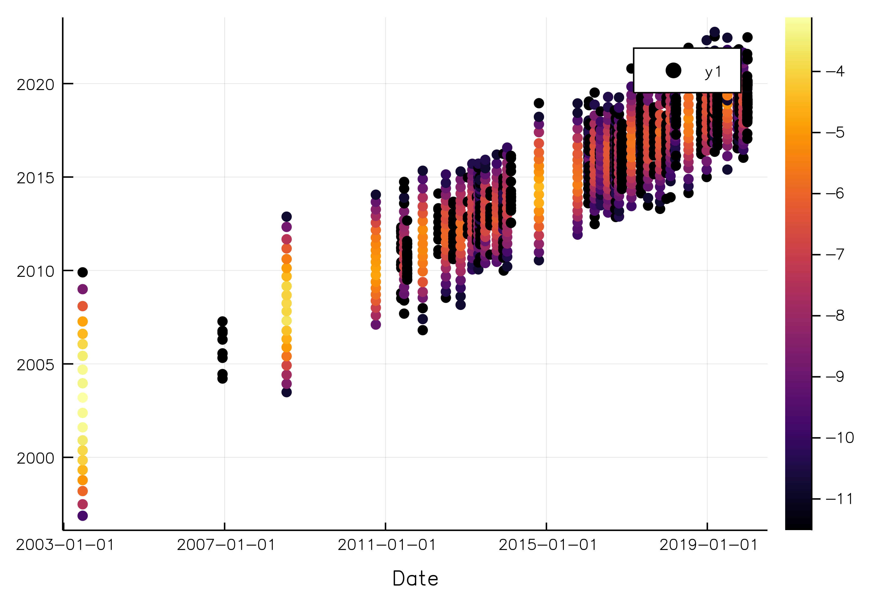
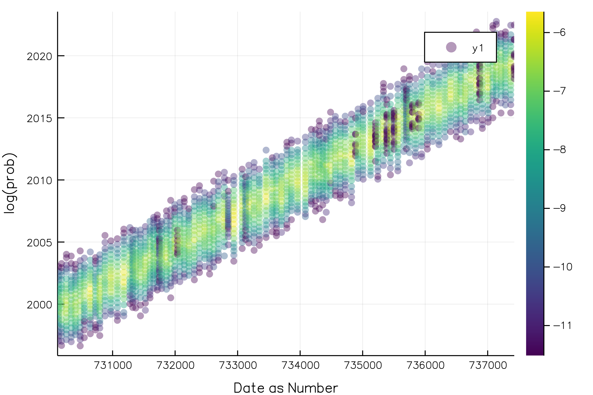

Visualizations
Many Stats Can Be Plotted
s = fit!(Series(Hist(25), Hist(-5:5)), randn(10^6))
plot(s)
Naive Bayes Classifier
The NBClassifier type stores conditional histograms of the predictor variables, allowing you to plot approximate "group by" distributions:
# make data
x = randn(10^5, 5)
y = x * [1,3,5,7,9] .> 0
o = NBClassifier(5, Bool) # 5 predictors with Boolean categories
fit!(o, (x, y))
plot(o)
Mosaic Plots
The Mosaic type allows you to plot the relationship between two categorical variables. It is typically more useful than a bar plot, as class probabilities are given by the horizontal widths.
x = rand([true, true, false], 10^5)
y = map(xi -> xi ? rand(1:3) : rand(1:4), x)
o = fit!(Mosaic(Bool, Int), [x y])
plot(o)
Partitions
The Partition type summarizes sections of a data stream using any OnlineStat, and is therefore extremely useful in visualizing huge datasets, as summaries are plotted rather than every single observation.
Continuous Data
y = cumsum(randn(10^6)) + 100randn(10^6)
o = Partition(Hist(10))
fit!(o, y)
plot(o, xlab = "Nobs")
o = Partition(Mean())
o2 = Partition(Extrema())
s = Series(o, o2)
fit!(s, y)
plot(s, layout = 1, xlab = "Nobs")x2 = [8192.5, 24576.5, 40960.5, 57344.5, 73728.5, 90112.5, 1.06497e5, 1.22881e5, 1.39265e5, 1.55649e5, 1.72033e5, 1.88417e5, 2.04801e5, 2.21185e5, 2.37569e5, 2.53953e5, 2.70337e5, 2.86721e5, 3.03105e5, 3.19489e5, 3.35873e5, 3.52257e5, 3.64545e5, 3.72737e5, 3.80929e5, 3.89121e5, 3.97313e5, 4.05505e5, 4.13697e5, 4.21889e5, 4.30081e5, 4.38273e5, 4.46465e5, 4.54657e5, 4.62849e5, 4.71041e5, 4.79233e5, 4.87425e5, 4.95617e5, 5.03809e5, 5.12001e5, 5.20193e5, 5.28385e5, 5.36577e5, 5.44769e5, 5.52961e5, 5.61153e5, 5.69345e5, 5.77537e5, 5.85729e5, 5.93921e5, 6.02113e5, 6.10305e5, 6.18497e5, 6.26689e5, 6.34881e5, 6.43073e5, 6.51265e5, 6.59457e5, 6.67649e5, 6.75841e5, 6.84033e5, 6.92225e5, 7.00417e5, 7.08609e5, 7.16801e5, 7.24993e5, 7.33185e5, 7.41377e5, 7.49569e5, 7.57761e5, 7.65953e5, 7.74145e5, 7.82337e5, 7.90529e5, 7.98721e5, 8.06913e5, 8.15105e5, 8.23297e5, 8.31489e5, 8.39681e5, 8.47873e5, 8.56065e5, 8.64257e5, 8.72449e5, 8.80641e5, 8.88833e5, 8.97025e5, 9.05217e5, 9.13409e5, 9.21601e5, 9.29793e5, 9.37985e5, 9.46177e5, 9.54369e5, 9.62561e5, 9.70753e5, 9.78945e5, 9.87137e5, 9.95329e5, 1.00352e6]
Plot a custom function of the OnlineStats (default is value)
Plot of mean +/- standard deviation:
o = Partition(Variance())
fit!(o, y)
plot(o, x -> [mean(x) - std(x), mean(x), mean(x) + std(x)], xlab = "Nobs")
savefig("partition_ci.png"); nothing # hidex2 = [8192.5, 24576.5, 40960.5, 57344.5, 73728.5, 90112.5, 1.06497e5, 1.22881e5, 1.39265e5, 1.55649e5, 1.72033e5, 1.88417e5, 2.04801e5, 2.21185e5, 2.37569e5, 2.53953e5, 2.70337e5, 2.86721e5, 3.03105e5, 3.19489e5, 3.35873e5, 3.52257e5, 3.64545e5, 3.72737e5, 3.80929e5, 3.89121e5, 3.97313e5, 4.05505e5, 4.13697e5, 4.21889e5, 4.30081e5, 4.38273e5, 4.46465e5, 4.54657e5, 4.62849e5, 4.71041e5, 4.79233e5, 4.87425e5, 4.95617e5, 5.03809e5, 5.12001e5, 5.20193e5, 5.28385e5, 5.36577e5, 5.44769e5, 5.52961e5, 5.61153e5, 5.69345e5, 5.77537e5, 5.85729e5, 5.93921e5, 6.02113e5, 6.10305e5, 6.18497e5, 6.26689e5, 6.34881e5, 6.43073e5, 6.51265e5, 6.59457e5, 6.67649e5, 6.75841e5, 6.84033e5, 6.92225e5, 7.00417e5, 7.08609e5, 7.16801e5, 7.24993e5, 7.33185e5, 7.41377e5, 7.49569e5, 7.57761e5, 7.65953e5, 7.74145e5, 7.82337e5, 7.90529e5, 7.98721e5, 8.06913e5, 8.15105e5, 8.23297e5, 8.31489e5, 8.39681e5, 8.47873e5, 8.56065e5, 8.64257e5, 8.72449e5, 8.80641e5, 8.88833e5, 8.97025e5, 9.05217e5, 9.13409e5, 9.21601e5, 9.29793e5, 9.37985e5, 9.46177e5, 9.54369e5, 9.62561e5, 9.70753e5, 9.78945e5, 9.87137e5, 9.95329e5, 1.00352e6]
Categorical Data
y = rand(["a", "a", "b", "c"], 10^6)
o = Partition(CountMap(String), 75)
fit!(o, y)
plot(o, xlab = "Nobs")
Indexed Partitions
The Partition type can only track the number of observations in the x-axis. If you wish to plot one variable against another, you can use an IndexedPartition.
x = randn(10^5)
y = x + randn(10^5)
o = fit!(IndexedPartition(Float64, Hist(10)), [x y])
plot(o, ylab = "Y", xlab = "X")
x = rand('a':'z', 10^5)
y = Float64.(x) + randn(10^5)
o = fit!(IndexedPartition(Char, Extrema()), [x y])
plot(o, xlab = "Category")x2 = String["a", "b", "c", "d", "e", "f", "g", "h", "i", "j", "k", "l", "m", "n", "o", "p", "q", "r", "s", "t", "u", "v", "w", "x", "y", "z"]
x = rand(10^5)
y = rand(1:5, 10^5)
o = fit!(IndexedPartition(Float64, CountMap(Int)), [x y])
plot(o, xlab = "X", ylab = "Y")
IndexedPartition is designed to work with Number index types. While other types may work, you may get some unexpected behavior.
x = rand(Date(2000):Date(2020), 10^5)
y = Dates.year.(x) + randn(10^5)
o = fit!(IndexedPartition(Date, Hist(20)), [x y])
plot(o, xlab = "Date")
x2 = Dates.value.(x)
o = fit!(IndexedPartition(Float64, Hist(20)), [x2 y])
plot(o, xlab = "Date as Number")